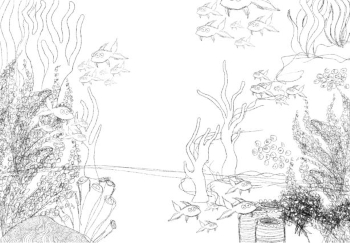
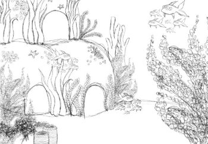

Artist
I have been a self-taught artist since I could hold a pencil. I especially love drawing and designing my own characters. My favorite things to draw are portraits, figure drawings, and animals!
Artist, Illustrator, Graphic Designer, and Toy Designer.
I have been a self-taught artist since I could hold a pencil. I especially love drawing and designing my own characters. My favorite things to draw are portraits, figure drawings, and animals!
I am currently illustrating a series of picture books about the environment. These books were commissioned and written by the founder of Idori, a company aiming to teach children about sustainability!
Starting in highschool I've been learning different aspects of graphic design and how to use various programs. In my classes I've learned about space, value, form, and shape!
I love designing and creating my own dolls and stuffed animals! Ever since I was a child, I've enjoyed creating tiny, miniature versions of things with my hands.


